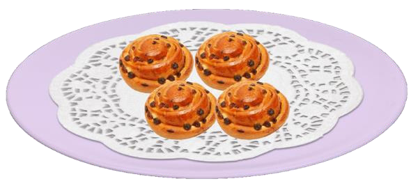

Food and Human Nutrition
Form Two

Figure 2.8: Chelsea buns
Activity 2.10
Preparation of buns
Watch reliable online videos or read from other sources on the preparation of various buns.
(i) Prepare buns of your choice.
(ii) Assess the quality of the prepared dish.
(iii) Describe any challenge you encountered in the preparation of the buns.
Finger millet porridge
Ingredients (serve 2 people)
150 g finger millet flour
150 ml milk
50 g sugar (optional)
Water
Method
1. Boil water in a cooking pan.
2. In a separate bowl, mix a small amount of cold water and the finger millet flour to form a smooth paste. Gradually, pour the paste into the boiling water while stirring continuously until the mixture starts to boil.
3. Allow it to boil until it is fully cooked.